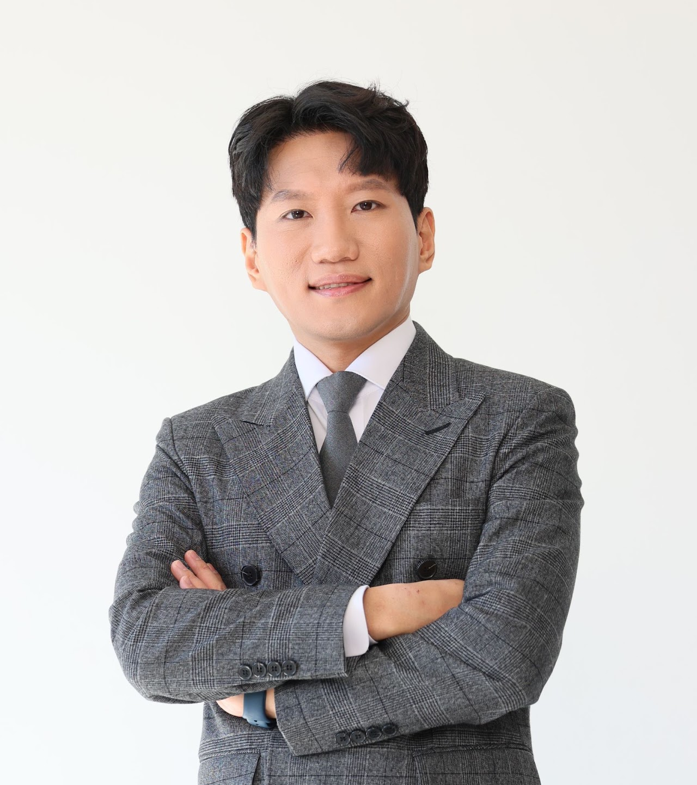
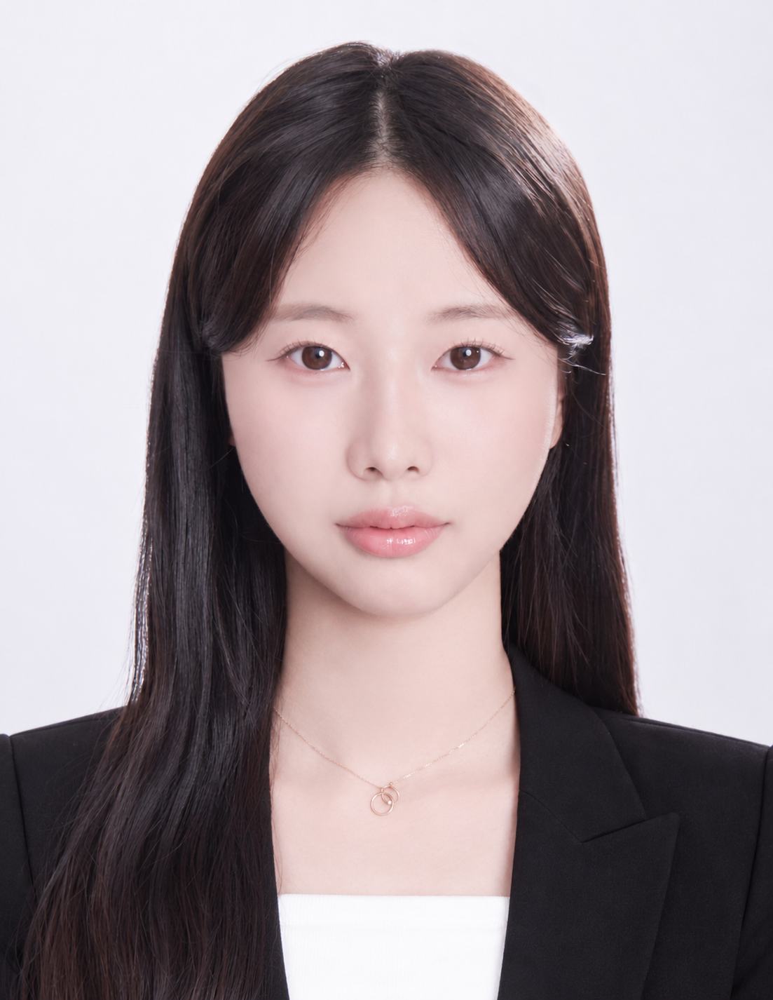
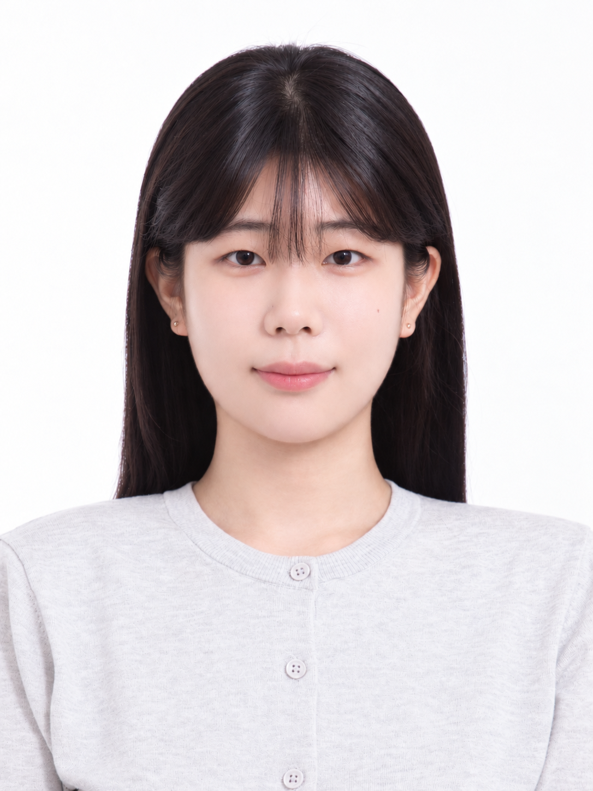
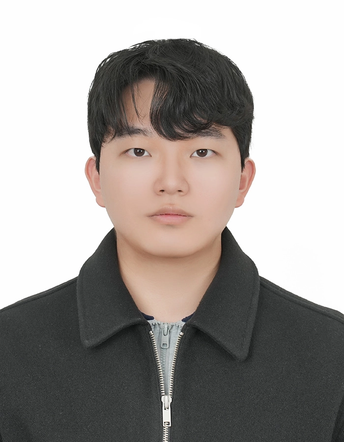
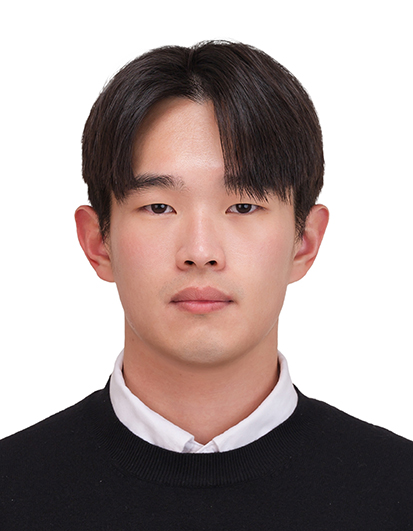

PHOTO
PEOPLE
AIIS Lab 구성원

PRINCIPAL INVESTIGATOR
오요셉
Yosep (Joseph) Oh, Ph.D.
한양대학교 ERICA 공학대학 산업경영공학과
한양대학교 ERICA 소프트웨어융합대학 인공지능학과(겸임)
한양대학교 ERICA LIONS칼리지(겸임)
Graduate Students



Undergraduate Students

PHOTO
PHOTO